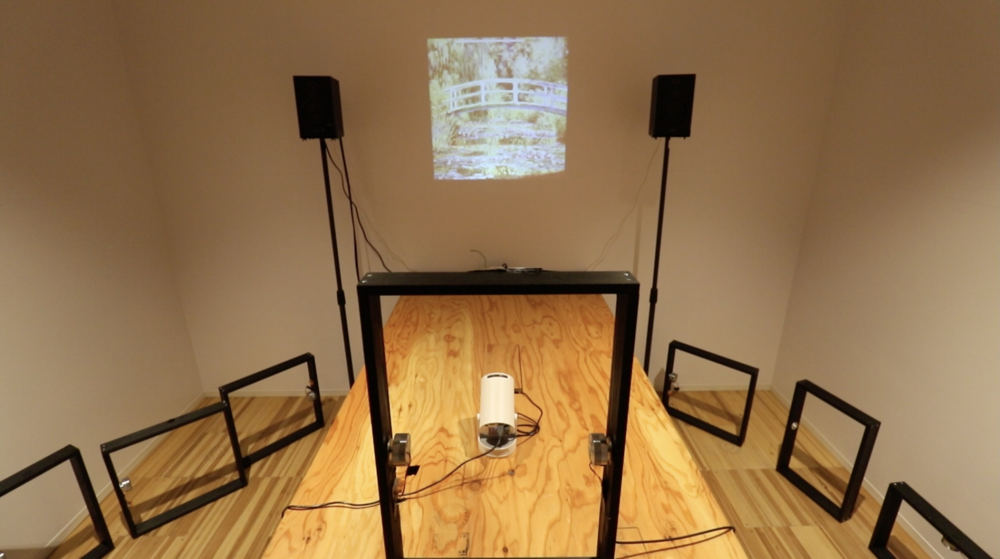
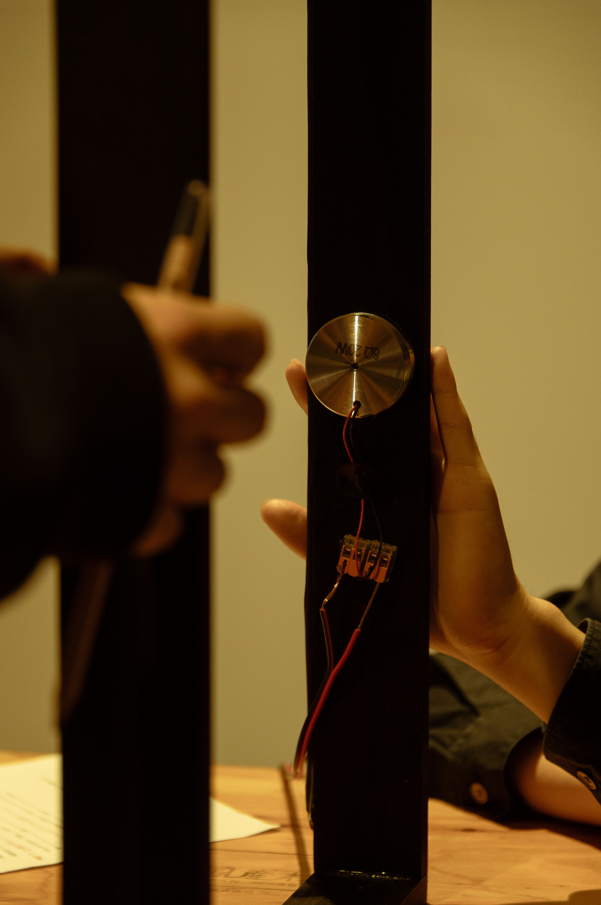
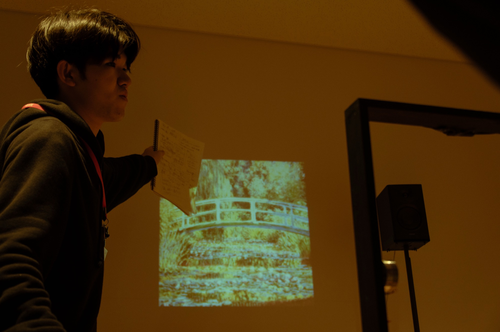
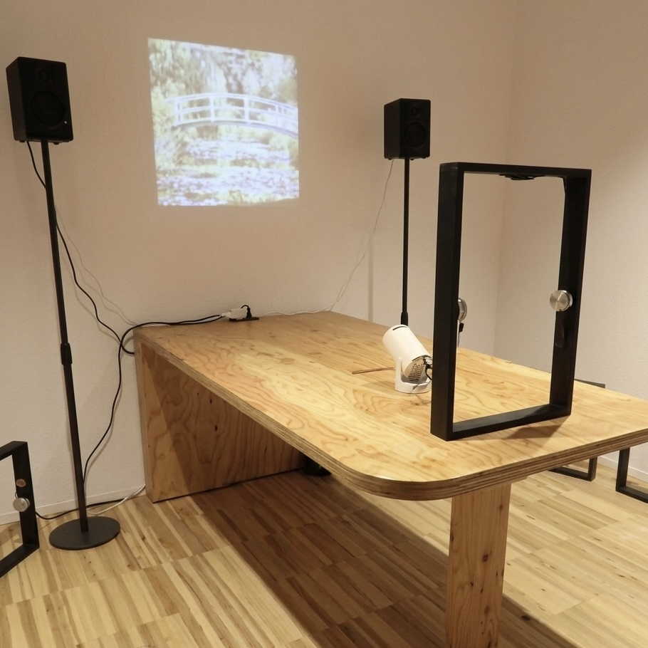
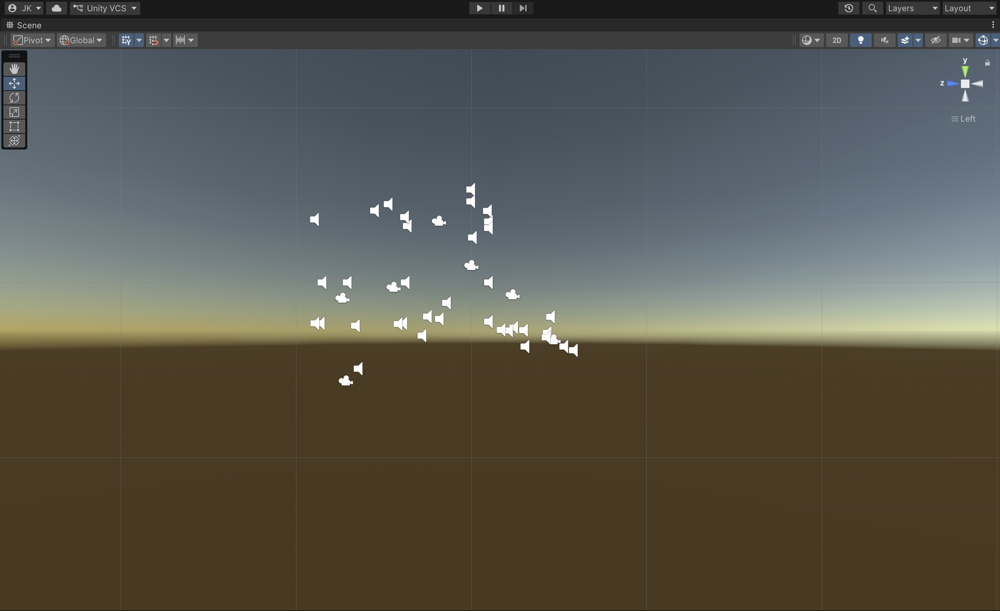
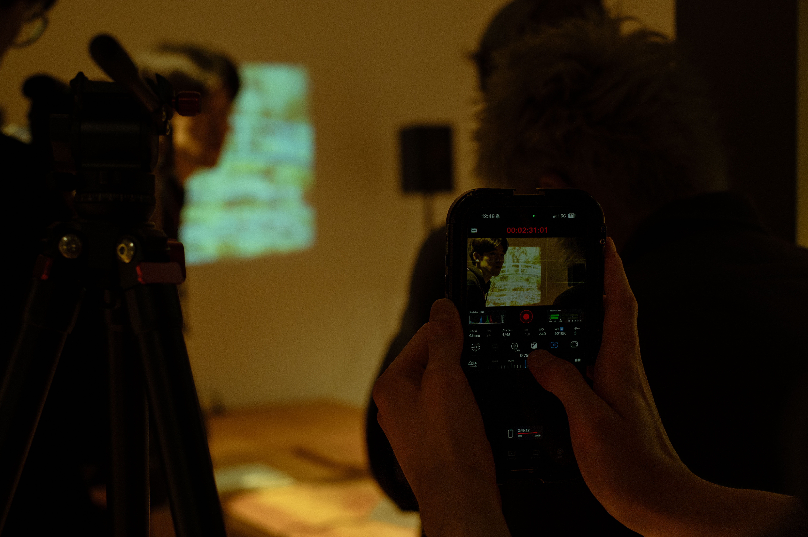
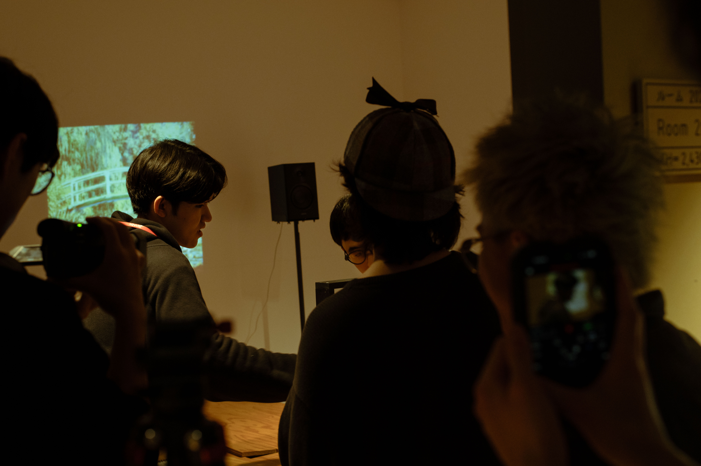
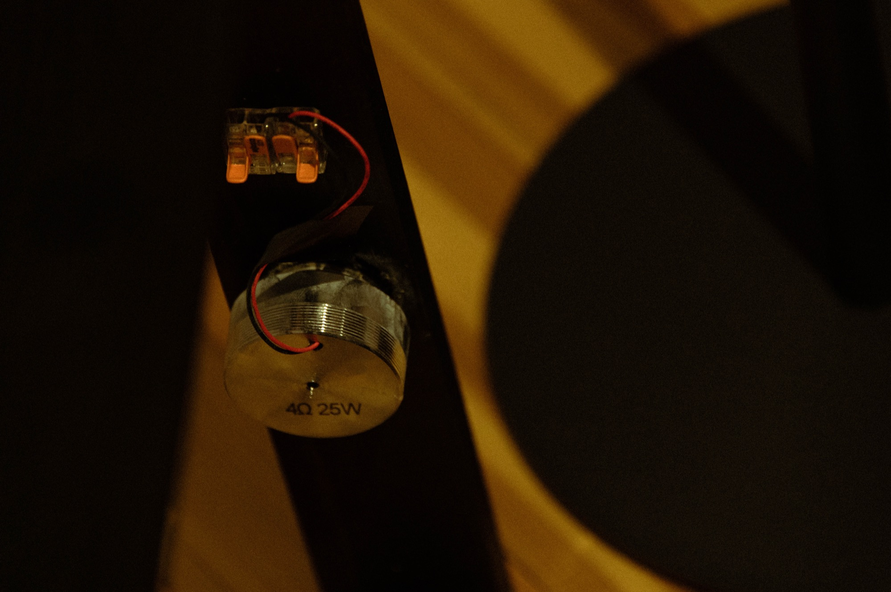
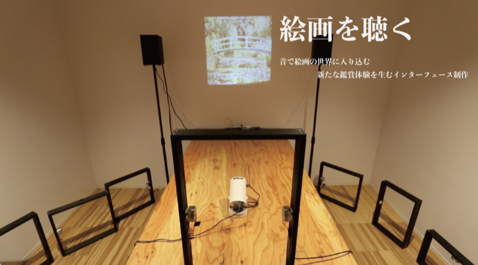

Work — 2026
絵画を聴く
「絵画を聴く」は、グッドデザイン・ニューホープ賞2026に入選しました。

背景・問い
Background絵画の中に鳴っていたであろう音風景や、絵画を想起させる音楽をつくる「作曲実践」。 人によって感じ方が異なる「絵画」という主観的メディアを、どう音に拡張して共有するかという試み。
自身の聴覚特性と、全盲の友人との鑑賞経験が原点にある。言葉に依存せず、視覚の程度に関わらず フラットに場を共有する「体感する鑑賞」の実現を目指している。
作品について
The Workモネの《睡蓮の池と日本の橋》の音風景を空間に立ち上げた没入型サウンド・インスタレーション。 木枠に設置した振動スピーカーと距離センサーにより、鑑賞者が手を通すと絵の構図に基づいて、 「木の振動」とともに音が変容する仕組みを構築した。視覚に過度に依存せず、音と身体感覚の 相互作用によって絵画の奥行きや構図性を直感的に体感させる試みである。
対象作品の文献調査・作品分析から抽出した視覚的要素や歴史的背景に基づき、水音・植物音・ 生物音・鳥の声などの音響要素を定義。ElevenLabsのAI音声生成技術で個別の音響素材を作成し、 Unityを用いたデジタル空間上に3D配置した。音源はプログラム制御によって互いの発生確率が 連動しており、二度と同じ響きにならない「鳴り続ける環境」として構築されている。Max/MSPを 介してUnityと距離センサーを連携させ、鑑賞者の身体的介入によって音が変容する仕組みをつくった。
写真
Photos







